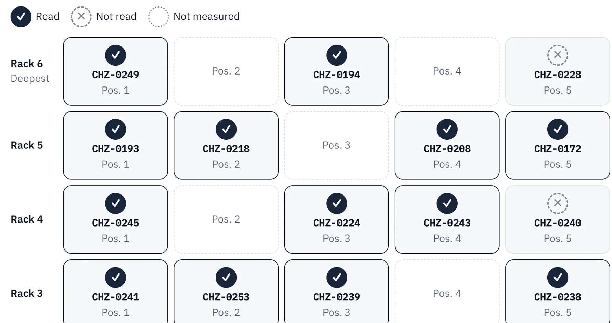

Read the same area several times, and compare
In your own warehouse or cellar, we use test tags, read the same area several times and compare the results by rack, tier and position. For racks that read poorly, we work out together how to manage them with the QR code on the tag or the cask number, together with the location record. If you have an Android device in mind, we test the actual device at the same time. The read check is charged, and we quote it once we know the place and the area.
How far and how reliably tags read depends on the tag and on how the casks are stored.
